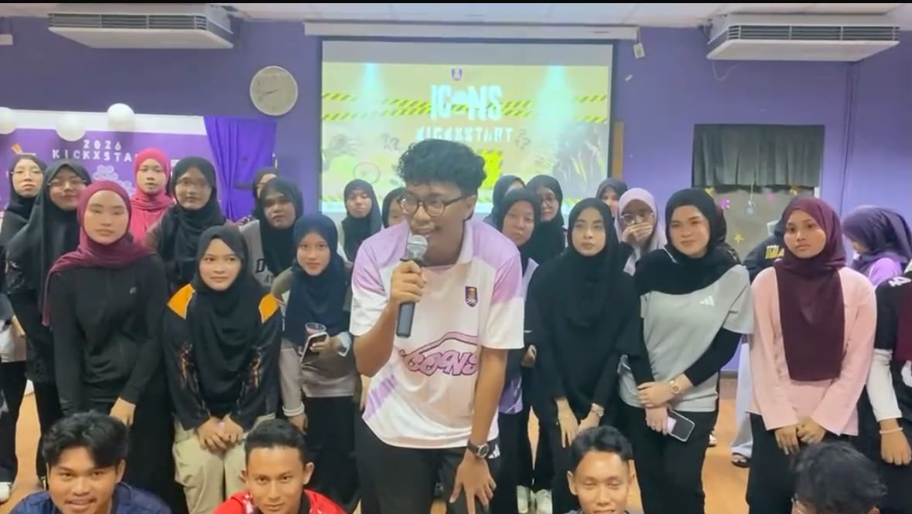
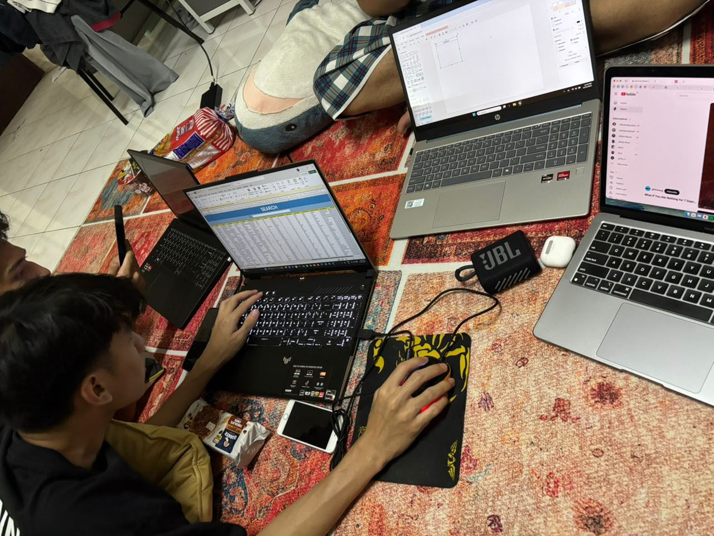
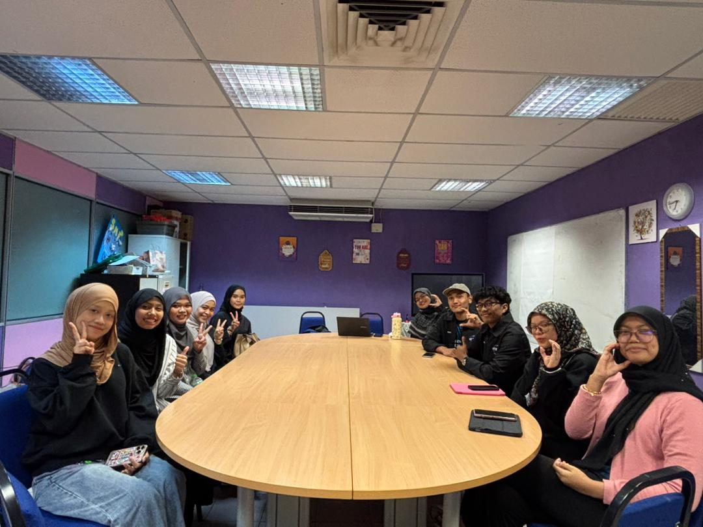
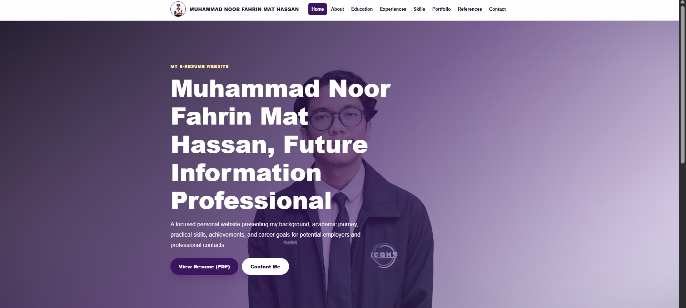
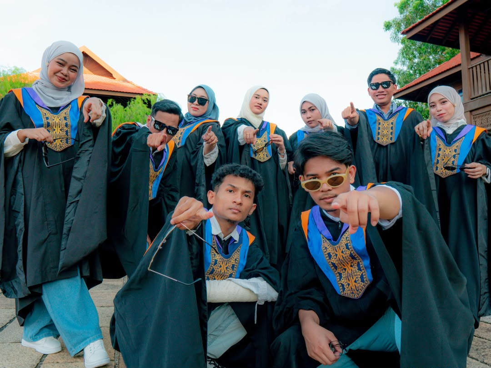

Present
Person in Charge for Information Content Management Club Event
PIC for ICONS Kickxstart

Professional Experiences
Experiences, projects and activities that have helped me develop practical skills, teamwork and professionalism.
My experience includes academic projects, co-curricular activities, volunteering, and practical tasks that help build communication, responsibility, and teamwork.
Person in Charge for Information Content Management Club Event
PIC for ICONS Kickxstart

University Assignments & Group Projects
Collaborated with team members to complete academic projects and presentations.

Assigned as ICONS Vice President 2
Collaborated with high council and ICONS members in creating events.

Professional E-Resume Website
Designed and developed a responsive personal website using HTML5, CSS3 and JavaScript.

Cinema Booking System Project
Created database structures, ERD and documentation for a cinema booking system.

Freelance Photographer
Wedding, Engagement, Pre-convocation photoshoot service.

Through these activities, I developed patience, accountability, adaptability, and the ability to work with others in a structured environment.